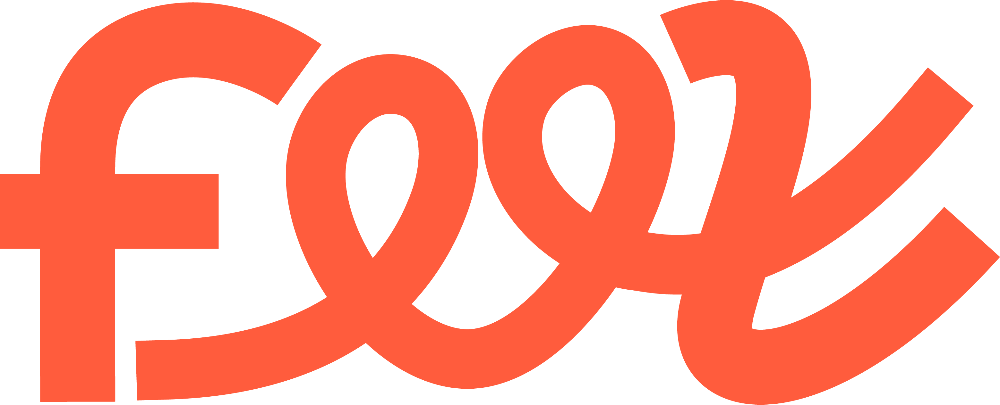
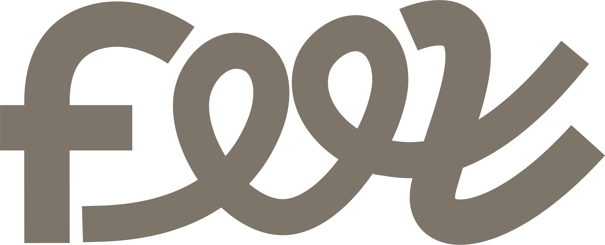

A Feel não cria valor. Ela revela.
A marca-mãe do grupo Feel não precisa de sobrenome — precisa de confiança. Este é o sistema que trava as decisões antes da tentação de improvisar: base clara, silêncio, coral raro, e um fio que atravessa tudo como rastro de trajetória.
Transformação → experiência → percepção → trajetória → fio → forma. O fio é consequência, nunca origem. Reputação não é currículo — é rastro.
Toda peça deve poder perder 30% dos elementos e melhorar. A personalidade mora no detalhe — como um anel numa roupa preta — nunca na composição inteira.
90% neutros, 8% cor institucional, 2% efeitos. O glass é comportamento, não linguagem — só aparece sobre o que existe mas não foi revelado.
E nunca: excesso, futurismo exagerado, frieza corporativa, infantilização, artificialidade.
Casa de marca, não casa de marcas.
Feel é a mãe e a fonte de confiança. Cada braço é Feel + um substantivo de ofício — herda a confiança e só especializa o território. "Group" fica de fora: soa holding financeiro, o oposto do DNA de builder. O descritor jurídico, quando exigido, é Feel Company — nunca Feel Group.
A infraestrutura de reputação da creator economy. O eixo — precisão de ferramenta, modo claro.
O braço físico nos shoppings — palco, pertencimento, calor. Puxa âmbar e o modo escuro de cena.
O slot está pronto. Um braço novo é só um descritor novo.
Todo braço nasce da mãe e carrega o nome. Nunca uma marca órfã que precise construir confiança do zero.
Um braço só ganha nome quando é real — domínio e @ assegurados, INPI limpo. Nada de marca para uma ideia.
Mesma família, dosagem diferente: o físico puxa calor e gesto, o digital puxa dado e frieza. Coerência sem achatar.
O logo já é a estratégia.
As consoantes duras (f, l) são a ferramenta; as vogais à mão (ee) são a alma — ferramenta séria com alma criativa, dentro da própria tipografia. A anatomia não se mexe. O que existe é refino óptico de curva, para deixar o logo inevitável, não diferente.




A v2 inverte a regra: monocromático é o padrão. A bicolor diz duas coisas ao mesmo tempo toda vez que aparece; no mono, a palavra diz uma coisa, e a segunda camada fica para quem descobre. Tamanho mínimo: 96px digital · 22mm impresso. O símbolo isolado (os dois loops) só ganha autonomia do wordmark depois que "Feel" tiver equity.
Duas famílias. E que desapareçam.
Fora Space Grotesk / Inter / JetBrains — viraram o template das startups de IA. A voz da Feel é Archivo + IBM Plex Mono: grotesca neutra sem tique geométrico, e um mono que herda o registro builder (lastro, prova, ritmo) sem cheiro de IDE. A hierarquia nasce de peso, escala e espaço — nunca de trocar fonte.
A Feel revela.
Números sempre tabulares no mono. O mono nomeia o dado e o registro builder; nunca corre em texto longo. Neue Haas Grotesk fica como upgrade licenciado quando houver caixa — não é o ponto de partida.
O coral aparece menos. Por isso vale mais.
A paleta não muda de família — muda de dosagem. Base clara é o default; o ink escuro vira palco. O coral segue a regra do anel: um elemento por composição.
#FBF9F3
#F2EDE3
#857C70
#17140F
#FF5C3D
#F0A63B
Links, o dado-chave de um card, a palavra grifada do título, a linha do fio, o estado ativo. Sempre um por composição.
Fundos grandes, texto longo, dois elementos disputando, gradiente decorativo. Se a peça só funciona colorida, ainda não está pronta.
Exclusivo do FeelMakers (cena, palco, físico). Nunca convive com coral na mesma peça — a família é a mesma, a ênfase troca.
Três comportamentos. Um vira regra.
O fio é rastro de trajetória — consequência, não origem. A pergunta não é "onde desenhar linhas", é quando o fio tem função. A espessura é ajustável nos Tweaks.
deixa rastro.
Uma linha, um gesto, no fim da composição — como quem assina. Uma vez por peça, sempre com o loop do símbolo. É o anel da roupa preta.
Conector de eventos (timeline de Lastro, divisores). Restrito: fora da timeline vira ornamento e compete com o conteúdo.
Malha de trajetórias como superfície — só em capa, palco e abertura de deck. Nunca atrás de texto. É o único lugar onde muitos fios convivem.
Nada "aparece" — tudo se desenha, descansa e recomeça. Verbos: desenhar · revelar · conectar · respirar · deslizar · entrelaçar. Proibidos: explodir, quicar, girar sem motivo, piscar.
Mesmo peso do gesto, terminais redondos, mesmo raio mínimo do wordmark. Nunca packs prontos.
O vidro significa: existe, mas não foi revelado.
Glass sai da identidade e entra no comportamento. Só aparece sobre conteúdo em estado de descoberta — e por isso ganha significado, em vez de virar decoração.
Claro é o sistema. Escuro é o palco.
O default do produto, dos documentos e do institucional é o claro — respiro, papel, silêncio. O ink vira o modo de cena: evento, keynote, FeelMakers.
Tratamento: luz disponível, −8% de saturação, sombras quentes puxando para o ink (nunca preto puro), grão fino 2–3%. Sem flash performático, sem "creator com ring light", sem 3D decorativo. Se parece anúncio de SaaS, está errado.
A marca é Feel. O convite é "Segue a Feel."
Marca e convite não disputam o mesmo lugar. E o "fio" é uma camada descoberta — aparece em campanha e motion, mas nunca é explicado de cara. Quem percebe, sente que encontrou algo da marca.
O nome, o wordmark, a instituição. Domínio institucional feelbrasil.com — apresentações, investidores, imprensa, parceiros.
O CTA institucional. Instagram @segueafeel; segueafeel.com.br em campanha, QR, evento e onboarding. Gira em torno da marca — nunca ocupa o lugar dela.
O trocadilho Feel→fio e a cultura de internet são recompensa de quem descobre. Recurso recorrente de campanha — jamais a explicação oficial.
Cada post continua o anterior — carrosséis emendam, capas dividem a mesma linha. O perfil não é mural: é narrativa. Quem entra, segue o fio.
A voz nunca explica — sugere. Nunca "plataforma inovadora que conecta"; sempre o fato: "34 provas assinadas". Reputação não é score — é rastro contável.
Cinco perguntas antes de aprovar qualquer peça.
Sem o logotipo — ainda parece Feel?
Sem a cor — ainda parece Feel?
Sem os efeitos — ainda comunica clareza?
Em preto e branco — continua elegante?
Se copiarem a paleta — sobra algo impossível de copiar?
Uma resposta "não" significa que a peça ainda depende de elementos superficiais. Volta para a mesa — remover 30% e testar de novo. Dica: o Tweak "Teste P&B" tira o coral do documento inteiro para provar isto ao vivo.
O sistema, provado em campo.
As peças deste espaço aplicam a mesma gramática sem repetir layout. Os outros espaços — produto (FeelWorks), físico (FeelMakers) e parcerias — vivem no índice geral.
Como a marca cresce sem quem a criou.
Isto não é um brandbook — é uma constituição. Define as leis que geram qualquer decisão futura, de qualquer equipe. Quem seguir este documento não precisa de quem o escreveu.
Toda peça nova segue o ciclo: contexto → gerar → avaliar (O Teste) → remover 30% → travar.
Decisão nova vira lei escrita (DESIGN.md) ou não existe. O sistema evolui pelo documento, não pela memória.
Pode-se trocar fonte, refinar cor, evoluir o produto. Não se pode tocar: a gramática do fio, a dosagem, e "revela, não grita".
Um braço novo = Feel + ofício, com domínio e registro assegurados. Nunca uma marca órfã, nunca nome para uma ideia.
Em 2040, nada daqui deve parecer datado — porque nada daqui é tendência. O que envelhece é superfície; o que fica é a lei.